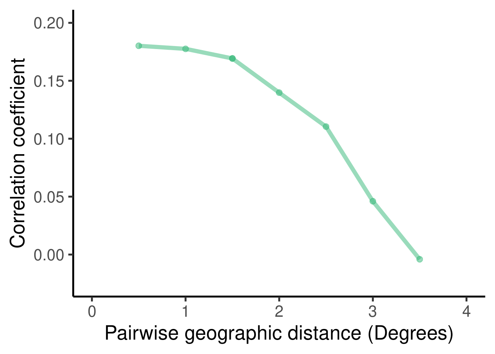

Acoustic analysis
Cape parrot vocal dialects
1 Purpose
Measure acoustic structure of cape parrot contact calls
Compare acoustic dissimilarity between individuals from different localities
2 Report overview
Load packages
Code
# knitr is require for creating html/pdf/word reports formatR is
# used for soft-wrapping code
# install/ load packages
sketchy::load_packages(packages = c("knitr", "formatR", "viridis",
"warbleR", github = "maRce10/PhenotypeSpace", "ggplot2"))
source("~/Dropbox/Projects/geographic_call_variation_yellow-naped_amazon/scripts/MRM2.R")3 Acoustic analysis
3.1 Format data
Code
dat <- read.csv("./data/raw/consolidated_sound_files_CPV_contact_calls_CURATED.csv")
dat <- dat[grep("cape", dat$species, ignore.case = T), ]
table(dat$species)
nrow(dat)
nrow(st)
all(dat$new_name %in% st$sound.files)
table(dat$sorted)
dat <- dat[dat$sorted != "delete", ]
unique(dat$new_name)
ohun::feature_acoustic_data(path = "./data/raw/consolidated_files")
warbleR_options(path = "./data/raw/consolidated_files")
st <- selection_table(whole.recs = TRUE)
st <- st[st$sound.files %in% dat$new_name, ]
nrow(st)
nrow(dat)
st$sorted <- sapply(st$sound.files, function(x) dat$sorted[dat$new_name ==
x][1])
table(st$sorted)
spectrograms(st, wl = 512, flim = c(0, 10), dest.path = "./data/processed/spectrograms",
pal = viridis, collevels = seq(-100, 0, 5))
spectrograms(st[st$sorted == "unsorted", ], wl = 512, flim = c(0,
10), dest.path = "./data/processed/unsorted_spectrograms", pal = viridis,
collevels = seq(-100, 0, 5))
tailor_sels(st, auto.next = TRUE, flim = c(0, 8), collevels = seq(-100,
0, 5))3.2 Make selection table
Code
sel_tab <- selection_table(path = "./data/raw/consolidated_files/",
whole.recs = TRUE)
tailored <- read.csv("./data/raw/consolidated_files/seltailor_output.csv")
tailored <- tailored[tailored$tailored == "y", ]
non_tailored <- sel_tab[!sel_tab$sound.files %in% tailored$sound.files,
]
non_tailored$tailored <- "n"
tailored$top.freq[is.na(tailored$bottom.freq)] <- non_tailored$bottom.freq <- min(tailored$bottom.freq,
na.rm = TRUE)
tailored$top.freq[is.na(tailored$top.freq)] <- non_tailored$top.freq <- max(tailored$top.freq,
na.rm = TRUE)
comm_names <- intersect(names(tailored), names(non_tailored))
all_sels <- rbind(tailored[, comm_names], non_tailored[, comm_names])
write.csv(all_sels, "./data/processed/selection_table_entire_sound_files.csv",
row.names = FALSE)3.3 Run cross-correlation
Code
sel_tab <- read.csv("./data/processed/selection_table_entire_sound_files.csv")
xcorr <- cross_correlation(X = sel_tab, path = "./data/raw/consolidated_files/",
method = 2, parallel = 1)
rownames(xcorr) <- gsub("-1$", "", rownames(xcorr))
colnames(xcorr) <- gsub("-1$", "", colnames(xcorr))
saveRDS(xcorr, "./data/processed/cross_correlation_matrix.RDS")
# less than 0.1% were undefined
sum(is.infinite(xcorr))/length(xcorr)
# convert infinite to mean xcorr
xcorr[is.infinite(xcorr)] <- mean(xcorr[!is.infinite(xcorr) & xcorr <
1])
xcorr_mds <- cmdscale(d = as.dist(xcorr), k = 2)
rownames(xcorr_mds) <- gsub("-1$", "", rownames(xcorr_mds))
saveRDS(xcorr_mds, "./data/processed/cross_correlation_MDS.RDS")4 Statistical analysis
Two approaches:
- Multiple Regression on distance Matrices
- Partial Mantel test
4.1 Multiple Regression on distance Matrices
- Model:
\[\begin{align*} Acoustic\ dissimilarity &\sim locality + geographic\ distance \end{align*}\] - Response values scaled to make effect sizes comparable across models
- Locality was coded as pairwise binary matrix in which 0 means that calls in a dyad belong to the same locality and 1 means calls belong to different locality
Code
xcorr <- readRDS("./data/processed/cross_correlation_matrix.RDS")
xcorr_mds <- readRDS("./data/processed/cross_correlation_MDS.RDS")
dat <- read.csv("./data/raw/consolidated_sound_files_CPV_contact_calls_CURATED.csv")
dat <- dat[grepl("cape", dat$species, ignore.case = T) & !is.na(dat$Location.for.cluster) &
!is.na(dat$Longitude.for.cluster) & !is.na(dat$Latittude.for.cluster),
]
dat$species <- "Cape parrot"
sub_xcorr <- xcorr[rownames(xcorr) %in% dat$new_name, colnames(xcorr) %in%
dat$new_name]
sub_xcorr_mds <- xcorr_mds[rownames(xcorr_mds) %in% dat$new_name,
]
sub_dat <- dat[dat$new_name %in% rownames(sub_xcorr_mds), ]
sub_dat <- sub_dat[match(rownames(sub_xcorr), sub_dat$new_name), ]
location <- sapply(rownames(sub_xcorr), function(x) sub_dat$Location.for.cluster[sub_dat$new_name ==
x])
loc_bi_tri <- as.dist(binary_triangular_matrix(group = location))
geo_dist <- dist(sub_dat[, c("Latittude.for.cluster", "Longitude.for.cluster")])
rect_var <- cbind(as.dist(1 - sub_xcorr), geo_dist, loc_bi_tri)
colnames(rect_var) <- c("fourier_xc", "geo_distance", "location")
rect_var <- rect_var[!is.infinite(rect_var[, 1]), ]
xc_mod <- MRM2(formula = fourier_xc ~ geo_distance + location, nperm = 10000,
mat = rect_var)
saveRDS(xc_mod, "./data/processed/matrix_correlation_fourier_cross_correlation.RDS")4.2 Partial Mantel test
- Evaluate association between acoustic dissimilarity and locality membership accounting for the effect of geographic distance
Partial Mantel statistic based on Pearson's product-moment correlation
Call:
mantel.partial(xdis = loc_bi_tri, ydis = xc_dist, zdis = geo_dist)
Mantel statistic r: 0.05181
Significance: 0.001
Upper quantiles of permutations (null model):
90% 95% 97.5% 99%
0.00598 0.00831 0.00937 0.01076
Permutation: free
Number of permutations: 9994.3 Mantel correlogram at different distances
Code
geo_vect <- geo_dist[lower.tri(geo_dist)]
geo_vect <- geo_vect[!is.na(geo_vect)]
xc_dist <- 1 - sub_xcorr
xc_dist[which(is.infinite(xc_dist))] <- mean(xc_dist[-which(is.infinite(xc_dist))],
na.rm = TRUE)
dists <- 1:10
mantelcorrlg <- function(i) {
classes <- seq(0, max(geo_vect), i)
# length(classes)
# Run a mantel correlation on the data
correl_SPCC <- vegan::mantel.correlog(D.eco = xc_dist, D.geo = geo_dist,
break.pts = classes, cutoff = FALSE, r.type = "pearson", nperm = 1,
mult = "holm", progressive = FALSE)
mantel.res <- correl_SPCC$mantel.res[, 1:3]
mantel.res <- cbind(mantel.res, break.size = i)
return(mantel.res)
}
mantel_list <- warbleR:::pblapply_wrblr_int(dists, cl = 1, function(x) try(mantelcorrlg(x),
silent = TRUE))
mantel_list <- mantel_list[sapply(mantel_list, class) != "try-error"]
mantel_list <- lapply(mantel_list, as.data.frame)
# # Save the correlation as an .RDS file so you don't have to
# run it multiple times in the future
saveRDS(mantel_list, paste0("./data/processed/correl_SPCC_several_distances.RDS"))Code
mantel_list <- readRDS(paste0("./data/processed/correl_SPCC_several_distances.RDS"))
mantels_df <- as.data.frame(do.call(rbind, mantel_list))
combined_dists <- sort(unique(mantels_df$class.index))
# interpolate
interpol_mantel_list <- lapply(mantel_list, function(x) {
appx <- approx(x = x$class.index[x$n.dist > 0], y = x$Mantel.cor[x$n.dist >
0], xout = combined_dists, method = "linear")
return(appx$y)
})
interpol_mantel_mat <- do.call(cbind, interpol_mantel_list)
interpol_mantel_df <- data.frame(combined_dists, mean.cor = apply(interpol_mantel_mat,
1, mean, na.rm = TRUE), sd.cor = apply(interpol_mantel_mat, 1,
sd, na.rm = TRUE))
ggplot(data = interpol_mantel_df, mapping = aes(x = combined_dists,
y = mean.cor)) + geom_ribbon(data = interpol_mantel_df, aes(ymin = mean.cor -
sd.cor, ymax = mean.cor + sd.cor), fill = "gray", alpha = 0.3) +
geom_point(col = viridis(10, alpha = 0.5)[7], size = 2.5) + geom_line(col = viridis(10,
alpha = 0.5)[7], size = 2) + xlim(c(0, 4)) + ylim(c(-0.025, 0.2)) +
geom_point(size = 3, color = "transparent") + theme_classic(base_size = 20) +
labs(x = "Pairwise geographic distance (Degrees)", y = "Correlation coefficient")
Takeaways
- Acoustic similarity is higher between calls from the same location
- Acoustic similarity decreases with distances
- Acoustic similarity decreases sharply after 2 degrees of distance (?)
Session information
R version 4.1.0 (2021-05-18)
Platform: x86_64-pc-linux-gnu (64-bit)
Running under: Ubuntu 20.04.2 LTS
Matrix products: default
BLAS: /usr/lib/x86_64-linux-gnu/atlas/libblas.so.3.10.3
LAPACK: /usr/lib/x86_64-linux-gnu/atlas/liblapack.so.3.10.3
locale:
[1] LC_CTYPE=pt_BR.UTF-8 LC_NUMERIC=C
[3] LC_TIME=es_CR.UTF-8 LC_COLLATE=pt_BR.UTF-8
[5] LC_MONETARY=es_CR.UTF-8 LC_MESSAGES=pt_BR.UTF-8
[7] LC_PAPER=es_CR.UTF-8 LC_NAME=C
[9] LC_ADDRESS=C LC_TELEPHONE=C
[11] LC_MEASUREMENT=es_CR.UTF-8 LC_IDENTIFICATION=C
attached base packages:
[1] stats graphics grDevices utils datasets methods base
other attached packages:
[1] ggplot2_3.4.2 PhenotypeSpace_0.1.0 warbleR_1.1.28
[4] NatureSounds_1.0.4 seewave_2.2.0 tuneR_1.4.4
[7] viridis_0.6.3 viridisLite_0.4.2 formatR_1.11
[10] knitr_1.43
loaded via a namespace (and not attached):
[1] splines_4.1.0 jsonlite_1.8.7 brio_1.1.3
[4] assertthat_0.2.1 sp_1.5-1 spatstat.geom_2.2-2
[7] yaml_2.3.7 remotes_2.4.2 pillar_1.9.0
[10] lattice_0.21-8 glue_1.6.2 digest_0.6.32
[13] polyclip_1.10-0 colorspace_2.1-0 htmltools_0.5.5
[16] Matrix_1.5-4.1 spatstat.sparse_2.0-0 pkgconfig_2.0.3
[19] raster_3.4-13 spatstat.core_2.3-0 scales_1.2.1
[22] tensor_1.5 spatstat.utils_2.2-0 dtw_1.23-1
[25] tibble_3.2.1 proxy_0.4-27 mgcv_1.8-42
[28] farver_2.1.1 generics_0.1.3 sketchy_1.0.2
[31] withr_2.5.0 pbapply_1.7-2 cli_3.6.1
[34] magrittr_2.0.3 crayon_1.5.2 deldir_0.2-10
[37] evaluate_0.21 fansi_1.0.4 nlme_3.1-162
[40] MASS_7.3-60 vegan_2.5-7 tools_4.1.0
[43] lifecycle_1.0.3 fftw_1.0-7 munsell_0.5.0
[46] cluster_2.1.2 packrat_0.9.0 compiler_4.1.0
[49] signal_0.7-7 rlang_1.1.1 grid_4.1.0
[52] RCurl_1.98-1.12 rstudioapi_0.14 rjson_0.2.21
[55] htmlwidgets_1.5.4 goftest_1.2-2 labeling_0.4.2
[58] bitops_1.0-7 rmarkdown_2.23 testthat_3.1.9
[61] xaringanExtra_0.7.0 gtable_0.3.3 codetools_0.2-18
[64] abind_1.4-5 DBI_1.1.3 R6_2.5.1
[67] gridExtra_2.3 dplyr_1.0.10 fastmap_1.1.1
[70] utf8_1.2.3 rprojroot_2.0.3 permute_0.9-5
[73] stringi_1.7.12 spatstat.data_2.1-0 parallel_4.1.0
[76] Rcpp_1.0.11 vctrs_0.6.3 rpart_4.1-15
[79] tidyselect_1.2.0 xfun_0.39